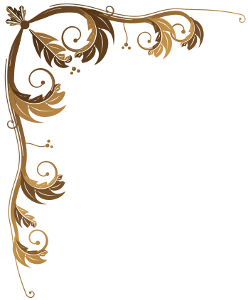
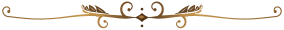
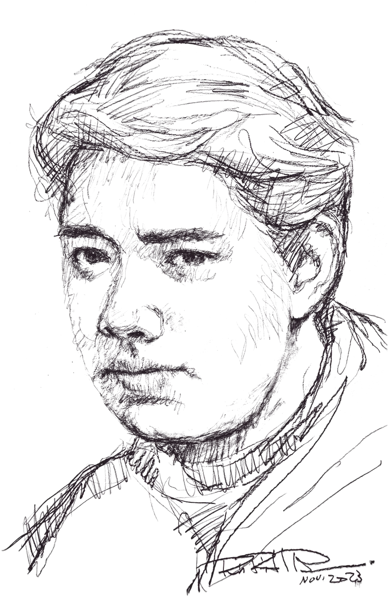

Cena de cumpleaños
Kamilo


te invito a celebrar mis 22 años.
Sábado 12 de diciembre
6:30 de la tarde
Don CándidoRestaurante
Los Robles, Managua
Confirmar asistencia
Pedile a Kamilo tu invitación personal para confirmar.
¡Te espero!